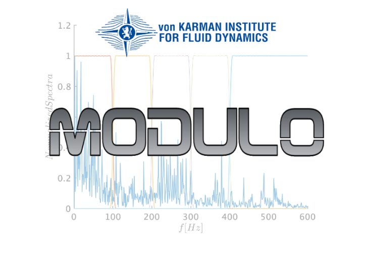

MODULO: Introduction¶
MODULO (MODal mULtiscale pOd) is a software developed at the von Karman Institute to perform Multiscale Modal Analysis of numerical and experimental data using the Multiscale Proper Orthogonal Decomposition (mPOD).
The theoretical foundation of the decomposition is described in - M.A. Mendez, M. Balabane, J.-M. Buchlin, Multiscale Proper Orthogonal Decomposition of Complex Fluid Flows, Journal of Fluid Mechanics, Vol 870, July 2019, pp. 988-1036. The pre-print is available at https://arxiv.org/abs/1804.09646
Example of applications of the decomposition to TR-PIV data are shown in
- M.A. Mendez, M.T. Scelzo, J.-M. Buchlin, Multiscale Modal Analysis of an Oscillating Impinging Gas Jet, Experimental Thermal and Fluid Science, Vol 91, February 2018, pp. 256-276 (https://doi.org/10.1016/j.expthermflusci.2017.10.032).
- M.A. Mendez, A. Gosset, J.-M. Buchlin, Experimental Analysis of the Stability of the Jet Wiping Process, Part II: Multiscale Modal Analysis of the Gas Jet-Liquid Film Interaction, Experimental Thermal and Fluid Science, Vol 106, September 2019, pp. 48-67 (https://doi.org/10.1016/j.expthermflusci.2019.03.004).
- M.A. Mendez, D. Hess, B. Watz, J.-M. Buchlin. Multiscale Proper Orthogonal Decomposition (mPOD) of TR-PIV data: a Case Study on Transient Flows, 13th International Symposium on Particle Image Velocimetry at Munich. An extended version of this article is currently in preparation.
The pre-prints of these articles are available from my RG page: https://www.researchgate.net/profile/Miguel_Mendez5
Currently, this folder contains ffive exercises. Of these, two are done both in Matlab and in Python, while the remaining ones are only available in Matlab. The exercises include 1D and 2D cases with both scalar and vectorial quantities. An example of processing on video sequences is currently in preparation.
All the codes so far assume that the dataset is equally spaced both in space (i.e. along a Cartesian grid) and in time. TR-PIV or video sequences satisfy these conditions easily. Other simple exercises using Finite Difference are also considered (ex.1, ex.2, ex. 3).
The proposed exercises are the following:
1- Decomposition of the velocity profile of a pulsating Poiseuille flow (1D, scalar). The theoretical background for the analytical solution is described in M.A. Mendez,J.-M Buchlin, VKI-TN 215, 2016, pdf available at https://www.researchgate.net/publication/304538821_Notes_on_2D_Pulsatile_Poiseuille_Flows_An_Introduction_to_Eigenfunction_Expansion_and_Complex_Variables_using_Matlab/stats. (Available in Python and Matlab)
2- Decomposition of a Synthetic Test case (Available only in Matlab)
3- Decomposition of the Vorticity field of a 2D simulation in Matlab. (Available only in Matlab)
4- Decomposition of a TR-PIV measurement of an impinging jet. (Available in Python and Matlab)
5- Decomposition of a TR-PIV measurement of a flow past a cylinder. (Available only in Matlab)
Exercises 2,3 and 4 are taken from the article at https://arxiv.org/abs/1804.09646 . Exercise 5 is available at https://arxiv.org/abs/2001.01971 .
The standalone application is available in the section “Release” of this repository.
The do list currently includes:
1- Finish the exercises in Python and clean the codes.
2- Extend the analysis to cases that do not have Cartesian grids, hence requiring weighted inner products.